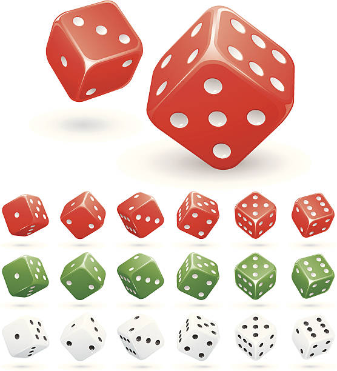
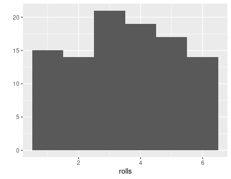
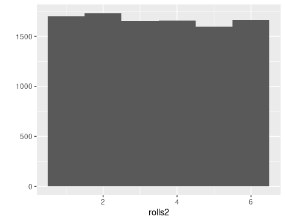

1 First probability ideas and first steps in R
Studying Finance naturally leads to studying probability. Finance focuses on allocating and pricing money over time, which inherently involves dealing with uncertainty and risk.
You can safe money to use it later for purchasing goods and services. Borrowing money allows you to invest today, with the expectation of repaying it from future project revenues. However, the future is uncertain, and we cannot predict tomorrow.
In Finance we therefore unavoidably have to deal with risk and uncertainty. The most fundamental concept we have available to deal with risk and uncertainty and to think about and analyze it is probability. Probability theory provides tools to quantify risk and manage uncertainty, both of which are fundamental to financial decision-making. Therefore every serious student of Finance has to study the theory of probability early on.
But of course probability is first of all a mathematical theory. It gets practical value and intuitive meaning in connection with real or conceptual experiments. Indeed these fascinating interconnections are already visible in the very beginning of probability, which emerged in the 16th and 17th century in Europe in the context of practical as well as scholarly discussions about gambling. These discussions engaged the greatest minds of their times, with names like Gerolamo Cardano (1501-1576), Galileo Galilei (1564 - 1642), Blaise Pascal (1623-1662), Pierre Fermat (1601 - 1665), Christiaan Huyghens (1629 - 1695), Jacob Bernoulli (1654 - 1705), Abraham de Moivre (1667 - 1754), Thomas Bayes (1701 - 1761) and Pierre Simon de Laplace (1749 - 1825).
While people were aware of chance at all times, liked to gamble or even had a godess of chance like the Greeks it seems only later it occurred to them that something as elusive as uncertainty or chance could perhaps be measured. This is the starting point for classical probability. It is also a very good starting point to familiarize ourselves with some basic concepts and knowledge of R by building a simple chance game people apparently had enjoyed playing at all times: Rolling a die. We will learn how to roll a die using the computer.
What has a die to do with Finance, some of you might ask. To those of you, who think so I would say: Perhaps more than you think. But clearly this is still an example quite removed from an actual Finance context, I agree. But be patient and bear with me. The building of a die, which can be rolled on the computer is a simple but extremely rich example which can lead us straight both into probability and into R at the same time and get us started for actual probability applications in Finance.
1.1 Rolling a die: First Probability ideas.
Lets start with a classic and old example of a probability model, which occupied the attention of Pascal and Fermat as well as their gambling friend the Chevalier de Méré: Rolling a six sided die.
When you role a die or several dice like shown in the following picture @ref(fig:dice), it is uncertain on which face it will finally end up after the throw.
What seems clear though is, that it will turn out that it is either one of the six possible faces of the die.
1.1.1 Random experiments, sample space, events
In the theory of probability a process leading to an uncertain outcome is called a random experiment. The example of throwing a die helps us to give a precise meaning to the notion of an uncertain outcome. While we can imagine in principle that the die lands on one of its corners and this is one outcome, we agree on the outset that we are going to consider the (practically relevant cases) that it will land on one of the faces.
The collection of all possible outcomes of a practical or conceptual random experiment is called in probability theory a sample space. While the sample space of throwing a die is an idealization it is exactly this idealization which simplifies the theory without affecting its applicability. The basic outcomes in the random experiment of throwing a die are that the die lands such that the upward showing face shows a 1 a 2, 3, 4, 5 or a 6. In the theory the collection of basic outcomes is denoted as a set. Thus the sample space of throwing a die is given as the set \({\cal S} = \{1,2,3,4,5,6\}\).
The sample space \({\cal S}\) is the set of all basic outcomes. The subsets of the sample space are often called events in probability theory. An event could be - for example - an outcome where the die shows an upward looking face with an even number \(A = \{2,4,6\}\).
1.1.2 The role and nature of idealizations in applications
Idealizations of the kind we discussed for the throw of a die are standard in probability and we will encounter them again and again. For example the movement of a stock price is often though of as a conceptual random experiment. When we try to agree on what is the appropriate sample space of this experiment, we can say that the price can not fall below 0 but it is hard to agree on what will be the highest possible price. In the probabilistic treatment of stock prices, which we will discuss later in our course, it is for instance common to assume that the sample space of this random experiment is the entire interval of non-negative real numbers \({\cal S} = [0, \infty)\).
Many of us would hesitate to claim that the price might rise without bound. Yet many models in applied Finance are based on such an assumption. The models allow arbitrary price hikes but with arbitrary small probability as the price gets higher and higher. Practically it does not make sense to believe that a security price can become arbitrarily high. The use of arbitrarily small probabilities in a financial model might seem absurd but it does no practical harm and makes the model simple and convenient to use. Moreover, if we seriously introduced an upper bound on a security price at \(x\) it would be also awkward to assume that it is impossible that it could be just a cent higher, an assumption equally unappealing than assuming it can get in principle arbitrarily high.
1.1.3 Classical Probability: Measuring uncertainty
Probability is a measure of how likely an event of an experiment is. But how could we measure chance? Here is the first big idea of probability theory and how the originators thought about it.1 How do you measure anything? If you think of length, for example, you take an arbitrary standard you agree on and then count. The originators of probability theory pursued the same idea with chance: To measure probability you choose equally probable cases and then count.
1 In this discussion I use chapter 1 in Diaconis and Skyrms (2019)
The probability of an event \(A\) according to the originators of the theory of probability is then \[\begin{equation} P(A) = \frac{\text{Number of cases where $A$ occurs}}{\text{Total number of cases}} \end{equation}\]
Thus, if we want to know the probability of the die ending up on a face such that an even number is shown (2,4,6) we have to compute according to this notion \(3/6\) (since the total number of cases are six basic outcomes) which is a chance of \(50 \%\).
Note that this classical notion of probability has a few interesting consequences, which we will discuss in more detail later but which already now naturally flow from this basic idea of measuring chance.
- Probability is never negative.
- If an event \(A\) occurs in all cases \(P(A)=1\).
- If \(A\) and \(B\) never occur in the same case, then \(P(A \,\text{or}\, B) = P(A) + P(B)\).
In particular then the probability that an event does not occur is 1 less the probability that it occurs: \(P(\text{not}\, A) = 1 - P(A)\).
Let us interrupt here our discussion of probability for a moment and ask how we can make good on our promise to make these ideas tangible, so we can play with them.
For this we will need the computer. Since we will talk to the computer in R, it is now the right time to look at the die rolling example from the perspective of R and dive into some of its basic concepts.
1.2 Rolling a die on the computer: First steps in R
1.2.1 The R User Interface
Before we can ask our tool to do anything for us, we need to know how to talk to it. In our case RStudio allows us to talk to our computer. It works like any other application. When you launch RStudio on your computer, in figure @ref(fig:rstudio-start-screen) you see a screen looking like this:

In this picture you see a screenshot of my RStudio screen. Interacting with the app is easy. You type commands via your keyboard at the prompt, which is the > symbol. You find this symbol in the RStudio pane called Console. You can see it in the left pane in the screenshot. You send the command to the computer by pressing enter. After you have pressed enter, RStudio sends the command to R and displays the result of your command with a new prompt to enter new commands, like this:
1+1[1] 2Let me pause to explain what you see here in this code example. First you see a light-gray box containing the command 1+1. This is an instance of a so called code chunk. Moving the cursor to the right upper corner of the chunk, will display a copy icon and you can click this icon to copy the code to the computer’s clipboard and then paste it at the prompt of your console (or for that matter anywhere else) and run it in R studio, if you wish. In the code-chunk the R-prompt > is not displayed. This symbol of the prompt is only shown in the Console itself.
When the code is executed, you see the result in the second light-gray box, just below the first one. It starts with a double hash ##, indicating that it shows an output of running the above code chunk and then displays the output as it would appear in the command window [1] 2.
The [1] means that the line begins with the first value of your result. For example, if you enter the command 20:60 at the prompt of your console which means in the R language, “list all the integers from 20 to 60” and press enter you get:
20:60 [1] 20 21 22 23 24 25 26 27 28 29 30 31 32 33 34 35 36 37 38 39 40 41 42 43 44
[26] 45 46 47 48 49 50 51 52 53 54 55 56 57 58 59 60meaning that 20 is the first value displayed in your result. Then there is a line break because not all values can be displayed on the same line and R tells you that 45 is the 26-th value of the result.
The colon operator : is a very useful function in R which we will need often. It allows us to create sequences of every integer between two given integers.
R needs a complete command to be able to execute it, when the return key is pressed. Lets see what happens, if a command is incomplete, like for instance > 5*.
In this case R will show the expression followed by a + instead of showing a new prompt. This means that the expression is incomplete. It expects more input. If we complete the expression, say like
> 5*
+ 4the expression can be evaluated and a new prompt is shown in the console.
If you type a command that R does not understand, you will be returned an error message. Don’t worry if you see an error message. It just is a way the computer tells you that he does not understand what you want him to do.
For instance, if you type 5%3 you will get an error message like this
> 5%3
Error: unexpected input in "5%3"
>Sometimes it is obvious why a mistake occurred. In this case, that R just does not know what to do with the symbol %. It has no meaning in this context. Sometimes it is not so obvious what the error message actually means and what you might do about it.
A useful strategy in this case is to type the error message into a search engine and see what you can find. The chance is very high that others encountered the same problem before you and got helpful advice how to fix it from other users on the internet. One site, we find particularly helpful for all kinds of questions related to R and R programming is https://stackoverflow.com/. Try it at the next opportunity.
Now with this basic knowledge, we can already make the first step to create a die on the computer using R. If you think of a physical die, the essential thing that matters are the points on its six sides. If you throw the die it will usually land on one of these sides and the upward showing side of the die shows the number of points. The colon operator : gives us a way to create a group of numbers from 1 to 6. R gives us the result as a one dimensional set of numbers.
1:6[1] 1 2 3 4 5 6Lets use these first steps in R to recap the probability concepts we have learned using this example of the six sided die: A basic outcome of rolling a six-sided die is for example 6 if the upper side after rolling the die happens to be the side with 6 points. The sample space of the experiment of rolling a six-sided die is the set \({\cal S} = \{1,2,3,4,5,6\}\). In probability theory we often use the symbol \({\cal S}\) or \(S\) for sample space. In many probability texts the sample space is also often denoted by the symbol \(\Omega\) the Greek letter for (big) Omega. A random experiment in this example is the rolling of the die. The outcome is uncertain but once the die is rolled the outcome can be determined precisely. The event that the outcome is a display of 10 points is the empty set \(A = \emptyset\). The symbol \(\emptyset\) comes from set theory and means the set containing no elements. This event can contain no elements because we can not get a score of 10 by rolling a six sided die.
1.2.2 Objects
You can save data in R by storing them in objects. An object is a name, you can choose yourself to store data. For example, if you choose to store the value 6 in an object called point_six, you would type:
point_six <- 6at the prompt. R will the store the value 6 in the object called point_six, which you can use to refer to the value. If you type the name of your object at the prompt, R will display the value you have assigned. A useful key combination for typing the assignment operator <- is to use the key combination ALT _. At the R prompt R will automatically print an assignment operator.
Now if you type the name of the object and press enter, R will display the value or values stored in it, like this:
point_six[1] 6Now you can use the name of the object to refer to its value. For instance, you could divide point_sixby 2and get a meaningful result
point_six/2[1] 3Now to make our die more tangible and useful, let us store it in an R object by typing the following command at the prompt. This command creates an object with name die and assigns the vector 1,2,3,4,5, 6 to it.
die <- 1:6
You can now see in the right upper Environment pane in figure @ref(fig:rstudio-screen-with-command) that R shows you that there is an object with the name die that it consists of integers 1,2,3,4,5. As you create more objects they will be stored in the Environment pane and are ready for your reference, unless you delete them. You can remove or delete an object by typing rm(object) or by assigning the value die <- NULL which would also remove the object from your environment or workspace.
You can name your objects almost anything with a few exceptions. An object name must not start with a number. There are some special symbols which can also not be used in object names, like ^, !, $, @, +, -, /, *. Note that R is case sensitive and distinguishes small and big letters. If you assign a new value for an object you have already created, R will overwrite the object without warning.
You can see which objects are currently created and available for you in the Environment pane of your session of by typing ls(). The UNIX users among you will recognize this command from the unix shell, where it displays the files in a directory.
Before we learn how we can actually roll our die and perform a random experiment with it, let us briefly use the opportunity to explain a few things about how R does computations. We have already explained that we can use the object name to refer to the value. So for instance if we type
die*die[1] 1 4 9 16 25 36This might irritate some of you because we have called the object a vector. In linear algebra multiplication of vectors is only allowed if there is an inner product. What happens here, if we use * the multiplication operator is that R does an element-wise multiplication of the six numbers of our die. Of course R allows to take an inner product as well, but this needs a different operator. To compute an inner product, we would type
die %*% die [,1]
[1,] 91Now R displays the result as a vectors with one row and one column, which is denoted in the output by [ , 1] for the column and [1, ] for the row. We will learn later more about the use and the meaning of this notation in R.
The element wise execution R usually uses also means that when you, for example type
die - 1[1] 0 1 2 3 4 5R would subtract 1 from every component in the vector die.
Another specific behavior of R, you need to know about is called recycling. If you give R two vectors of different length in an operation, R will repeat the shorter vector as long as it is of equal length with the longer one. For example, if you have: ::: {.cell}
die + 1:2[1] 2 4 4 6 6 8:::
you see that R adds 1 to 1 and 2 to 2 and then starts over again by adding 1 to 3 and 2 to 4 and then starts over once again by adding 1 to 5 and 2 to 6. If the longer vectors is not a multiple of the shorter one, R recycles but the cuts off. It will give you a warning though. ::: {.cell}
die + 1:4Warning in die + 1:4: longer object length is not a multiple of shorter object
length[1] 2 4 6 8 6 8:::
While this might seem awkward to some of you, we will see that for data manipulation element-wise execution is often extremely useful. It allows to manipulate groups of values in a systematic yet easy way.
1.2.3 Functions
R contains many functions which we can use to manipulate data and compute things. The syntax for using a function is very simple: You type the function name and put the value of the function argument in parentheses. Here we use for illustrations the function of the square root sqrt(): ::: {.cell}
sqrt(4)[1] 2::: or rounding a number: ::: {.cell}
round(3.1415)[1] 3::: The data you write in the parentheses are called the function arguments. Arguments can be all sorts of things: raw data, R objects, results from other functions.
If functions are nested, R evaluates the innermost function first and then goes on to the outer functions. To see examples of all these instances you can take ::: {.cell}
mean(1:6)[1] 3.5mean(die)[1] 3.5round(mean(die))[1] 4::: for example.
For simulating random experiments, R has the very useful function sample(). With this function we can roll our die on the computer and conduct actual random experiments.
The function takes as arguments a vector names x and a number named size. sample will return size elements randomly chosen from the vector x. Lets say: ::: {.cell}
sample(x = 1:4, size = 2)[1] 3 1:::
In this case sample has chosen 4,1 from the vector x = (1,2,3,4) at random.
If we want to roll the die in our computer we can thus pass the die as an argument to sample and use the number 1 for the size argument. Lets do a few rolls with our die ::: {.cell}
sample(x = die, size = 1)[1] 3sample(x = die, size = 1)[1] 1sample(x = die, size = 1)[1] 2sample(x = die, size = 1)[1] 1::: These are the random outcomes of our consecutive rolls. It is as if we had thrown an actual die but in this case we have done the same thing on the computer. Isn’t it cool that this is possible at all? The sample() function will remain our good friend throughout this course.
R functions can have many arguments, but they need to be separated by a comma.
Every argument in every function has a name. We specify which data are assigned to the arguments by setting a mathematical equal sign = between the name and the data. Names help us to avoid passing the wrong data and thereby mixing up things or committing errors. But using names is not necessary. If we just wrote ::: {.cell}
sample(die,1)[1] 4::: R would also know what to do. It is not always clear which names to use for a function. If you are not sure, you can use the function args() to look it up. Here we take the function roundas one example. ::: {.cell}
args(round)function (x, digits = 0, ...)
NULL::: Note that the digits argument in the round function is already set to 0. Frequently R functions come with optional arguments. These arguments are optional because the come with a default value, which is 0 in case of the round function.
We recommend that you write out argument names as a rule. It gives clearer code and avoids errors. If you don’t write argument names, R matches your values to the arguments of the function by order.
1.2.4 Writing your own functions
Now we are ready to write our own function to roll the die in our computer. Each function in R has the same elements: A name, a function body of code and a set of arguments. To write your own function, you have to write up all of these parts and save them in an R object. The syntax is:
my_function <- function() {}
The name here is my_function, next comes the expression function() which needs to be assigned. The names of the function arguments have to be written between the parentheses. Then we have to write the actual code within the braces {}.
To do this for the die, lets write a function named roll_die. ::: {.cell}
roll_die <- function(){die <- 1:6
sample(die, size = 1)}:::
Now we can roll our die for a few times to show how the function works ::: {.cell}
roll_die()[1] 5roll_die()[1] 4roll_die()[1] 2roll_die()[1] 6roll_die()[1] 1::: Note that in our function roll_die() has no arguments, just the function body. This is perfectly legitimate in R. It is important that when we call the function we have to call it with the parenthesis like roll_die(). If we only call the name roll_die, R will display the code in the function body.
A final remark in the sample function is in place here. If we look at the arguments of sample using the args function we see ::: {.cell}
args(sample)function (x, size, replace = FALSE, prob = NULL)
NULL::: Lets do not discuss all the details of this output but concentrate for a moment on the replace argument. What does this mean?
As we saw previously we can use the sample function to model the rolling of our die. If we set the size argument to 1 we get the roll of one die. If we set the size argument to n, we would simulate the rolling of n dies. But now the replace argument becomes crucial. As we can see in the output of the args function replace has a default value FALSE. This is a logical argument. It tells R, for example, that if we set size = 2, meaning that two dice are rolled, if the first dice shows, say a value of 3, the second die cannot show 3 as well.
This is clearly not what we have in mind when we model the rolling of 2 dice. It should be possible that both dies show the same value. To enable this behavior of the sample function, we have to change the default value of the replace argument to TRUE. Then R chooses a random draw from all of the six possible values for all dice rolled.
Congratulations ! You have written your first R function for conducting a simple random experiment. Let me remind you once again: Think of the parentheses as a trigger that tells R to run the function. If you omit the trigger R just prints the body of the function. When you run a function, all the code in the function body is executed and R returns the result of the last line of code. If the last line of code does not return a value neither will R.
1.2.5 Arguments
Imagine we remove the first line of code in our function body and changed the name die in the sample function to “ball”. ::: {.cell}
roll_die2 <- function(){sample(ball, size = 1)}::: If we call the function now, we will get an error. The function call roll_die2() will result in the error message Error in sample(ball, size = 1) : object 'ball' not found (try it!)
We could supply ball when we call roll_die2 if we make ball an argument of the function. Lets do this: ::: {.cell}
roll_die2 <- function(ball){sample(ball, size = 1)}::: Now the function will work as long as we supply ball when we call the function. ::: {.cell}
roll_die2(ball = 1:6)[1] 1::: Note that we still get an error, if we forget to supply ball argument. This could be avoided if we give the function a default argument ::: {.cell}
roll_die2 <- function(ball= 1:6){sample(ball, size = 1)}::: Now if we type: ::: {.cell}
roll_die2()[1] 6::: everything works, just as intended.
1.2.6 Scripts
So far we have worked by interacting with the console. But what if you want to edit your functions? It would be much easier, if you could use a draft of your code and work form there. This can be done by using a script.
You create a script by going to File > New File > R script in the menu bar of RStudio. Using scripts is the standard way to write code in R. It not only helps you to keep track of your code, save it and edit it later. It also makes your work reproducible. You can edit and proofread your code and share it with others. To save your script go to File > Save As in the menu bar.

RStudio has many useful features to help you work with scripts. You can for instance automatically execute a line in a code by using the run button. You can also execute sections of code or the entire script. The entire script is executed by running the Source button. For all these commands there are key short cuts which you will learn as you work more with RStudio and R.
From now on you should write all your R-code for this course in scripts. Make a new folder for the scripts you write and store your R-code there from now on.
1.2.7 Using packages and finding Help
We have now a function which we can use to simulate the rolling of a die, roll_die(). If the die is fair it should be the case that if we roll the die often, all numbers should occur about equally often. The die should not be weighted in favor of a particular value.
One way to learn whether our die is fair are repetition and visualization. These are tools we will need all the time, when working with data and when doing probability. While R has many useful functions, one of the great powers is that R is constantly extended by a huge community of users by providing packages.
Packages are add on functions, which will not be available when you install R. They need to be installed and loaded before you can use them. Since packages are such a powerful tool in R we need to introduce what they are and how to use them in the beginning.
1.2.8 Packages
There are many visualization tools in R that come with the basic installation. Since the point we want to make here is about packages, we will use a visualization function which is part of the add on package ggplot2, a very popular package for making all kinds of graphs. ggplot2 is not part of the base-R distribution. It has to be therefore loaded before we can use it.
There are many additional functions provided with this package. Indeed you could run a whole course on just that 2 For the point we want to make here we will use just one of them, called qplot(), a shorthand for for quick plot.
Since qplot() is a function in the package ggplot2, we first need to install this package. To install a package you need to be connected to the internet. If you have internet connection go to the command line and run at the command line: install.packages("ggplot2").
R displays what is happening while executing the command. Don’t worry if you don not know what all of these messages exactly mean and don’t panic that they are displayed in red. All packages can be installed like this. You have just to enter the correct name in the function install.packages(). The lower right pane in the RStudio software alternatively provides a tab called Packages. Using this tab, you can also install R packages interactively by clicking the install button on the upper left corner of the Packages tab.
After installation the package is on our hard-drive but it can not yet be used. To use the package it has to be loaded. This is done with the command library. To load the ggplot2 package we type ::: {.cell}
library("ggplot2")::: and hit the return key. Many things could be said about the R package system and you will learn it in more detail as we go along in our course. For the moment the most important thing to remember is that a package needs to be newly loaded whenever you want to use it in a new R session.
To check whether our dies is fair, we need to roll it many times. R provides a function, that does this for us. This function is called replicate() and provides an easy way to repeat a command many times. The number of times we want to repeat something is given as an argument to the replicate function.
Now lets roll our die 100 times and save the result in an object we call rolls: ::: {.cell}
rolls <- replicate(100, roll_die())::: We now use the qplot()function from the ggplot2 library to make a quick visualization, by typing the command qplot(rolls). I include the resulting picture in the following figure ::: {.cell layout-align=“center”} ::: {.cell-output-display}  ::: ::: If you try this and your picture looks a bit different from mine, don’t worry. This is as things should be. I have stored the picture after one particular run of the replicate function and saved it in my figures folder to these lecture notes. Each time you run the replicate function anew a new random outcome is stored which will look not exactly the same as any other or course. This is what randomness does to the outcome of rolling a die.
It looks like every value occurred roughly 16 times but there is still quite some variation. For instance, the value 3 seems to occur more than 20 times whereas the value 2 occurs less than 15 times.
Maybe we have to give it another trial with more replications. With the computer we can do this with a fingertip. Let us roll our die 10000 times and plot the result.
> rolls2 <- replicate(10000, roll_die())
> qplot(rolls2m bindwidth = 1)Now the picture looks better.

We will learn in our course why the picture get better as we increase the number of rolls of the die. For the moment, let us just state that at least for this case it seems that there is no significant visual evidence that our virtual die is loaded.
1.2.9 Getting Help
We have now learned a tiny number of R functions and we have written one function ourselves. We have learned how to make use of functions provided by packages.
It would be overwhelming to memorize and learn them all. In R, fortunately, every function comes with a detailed documentation and with its own help page. You need to learn how to use this source right from the beginning.
To access the help page of a function you type the function name preceded by a question mark at the prompt, like this ::: {.cell}
?sample:::
Then, after you have pressed the return key, a help page is opened in the right lower pane under the help tab as shown in @ref(fig:helpinr) ::: {.cell layout-align=“center”} ::: {.cell-output-display}  ::: :::
::: :::
This help page has a particular structure that you will find for every other R function no matter whether it is provided by the base installation or by a package. In the upper left corner you see the name of the function (sample) and in curly brackets next to it the term base, which means that this is a function in the R base installation. Then you see a headline about what the function does.
From the top of the page, you then first see the field Description. This is a short description what the function does. Here it says
Description
sample takes a sample of the specified size from the elements of x using either with or without replacement.The next field is Usage. It gives you the function description with the arguments. Here for example
Usage
sample(x, size, replace = FALSE, prob = NULL)
sample.int(n, size = n, replace = FALSE, prob = NULL,
useHash = (!replace && is.null(prob) && size <= n/2 && n > 1e7))
The first line in Usage should by now be familiar. Don’t worry about the second line. The function can obviously do more than we know so far.
Next comes a list of arguments the function takes and what type of information R expects you to provide, as well as what R will do with this information. Here it says for example
Arguments
x
either a vector of one or more elements from which to choose, or a positive integer. See ‘Details.’
n
a positive number, the number of items to choose from. See ‘Details.’
size
a non-negative integer giving the number of items to choose.
replace
should sampling be with replacement?
prob
a vector of probability weights for obtaining the elements of the vector being sampled.
...
We omit some information here.
Then comes a field called Details which gives a more in-depth description of the function. The next field is called Value. It describes what the function returns when you run it. Then we have a reference to related R functions under the field See. Finally there is a field called Examples. This field contains example code that is guaranteed to work. It shows a couple of different cases how you can use the function in practice.
1.3 Application: Coincidences and the Blockchain
1.3.1 The birthday problem
We learned now some basic notions of probability and of R with the example of the rolling of a fair die. It is really surprising what already can be done by just applying the simple ideas we have just learned. The application we want to show you now is known to probability theorists as the birthday problem. It originates in a piece of recreational maths and math-puzzles but it reaches out until cryptography, computer security and blockchain architecture. It also gives us an opportunity to apply some of our newly acquired R-knowledge.
The starting question in the birthday puzzle is: What is the probability that at least two people in a room share the same birthday, when we neglect things like leap years, and when we assume that birthdays on any day of the year are equiprobable and the birthdays of the people in the room are independent. We have no twins for example. Perhaps some of you have already seen this problem before. If not, the result may surprise you. Even if you saw the birthday problem before, perhaps not many of you have seen the connection to the cryptography and the blockchain.3
3 We follow here the discussion in Diaconis and Skyrms (2019)
First, observe that we took our assumptions such that we are in the frame of classical probability like the originators of the field thought about it.
Now for the sake of familiarizing ourselves with the new concepts, let us try to map the birthday problem into the probability notions we learned so far.
The sample space is the set of possible outcomes of the experiment. Assume we have \(n\) people in the room. Since each person can have a birthday at any of the 365 days in the year (note that we assumed we exclude leap years) and we have \(n\) people in the room, the possible basic outcomes are \(365 \times 365 \times 365 \cdots 365\) taken \(n\) times. This will produce a set with \(365^{n}\) ordered \(n-tuples\) or sequences of birthdays. This is the sample space of this experiment, written as \({\cal S} = \{x | x \in 365^n\}\) in set theoretic notation. It means the sample space is the set of all ordered \(n-tuples\) from the Cartesian product \(365^n\).
Remember that in mathematics, a Cartesian product is a mathematical operation that returns a set (or product set or simply product) from multiple sets (in this case the sample space, \({\cal S}\). That is, for sets \(A\) and \(B\), the Cartesian product \(A \times B\) is the set of all ordered pairs \((a, b)\) where \(a \in A\) and \(b \in B\).
Now given this sample space we can assign a probability to the event that two people chosen at random will have the same birthday. The denominator will this be \(365^n\). The nominator for this probability will be much more straightforward to figure out, if we compute the complement. We discussed before that the probability of the complement of an event is 1 minus the probability of the event. Translated to the birthday problem, this means we look for the 1 minus the probability that that all birthdays are different. The probability that the second person has a different birthday from the first is \(\frac{364}{365}\). If they are different the probability that the third person has a different birthday from them is \(\frac{363}{365}\) and so on for all \(n\) in the room. Thus the probability of a shared birthday in the room is: \[\begin{equation*} P(\text{at least two people share birthday}) = 1 - \frac{365 \times 364 \times 363 \cdots \times 365 - n +1}{365^n} \end{equation*}\] Now there is an additional thing we did not yet introduce and which we will learn about in the next lecture. This refers to our assumption that the individual birthdays are independent. For the moment you need to take the following fact on faith: The probability of independent events is the product of the probability these events.
Now comes the surprise for those of you who did not already see the birthday problem. Assume the group size of people is 23. Let us compute the birthday coincidence probability. For this computation we make use of the R function prod() which takes a vector of numbers as input and computes their product. For \(n=23\) we need the list of numbers from 365 to 343. Now we can use the : operator and take advantage from one of its cool properties. If we formulate the command as 365:343 then the colon operator will give us a descending list of integers starting at 365 and ending at 343. Then the probability can be computed as ::: {.cell}
1 - prod(365:343)/365^23[1] 0.5072972::: We have used the operator ^ which is needed to compute powers. Now we see from our computation that with 23 people the probability is already larger than 50 %. Quite stunning. You can now verify yourself that with 50 people this probability is already at 97 %.
1.3.2 An R function to compute birthday probabilities
Now let us use our knowledge about how to write R functions to write a function to compute birthday probabilities. The function argument is the number \(n\) of people in class. The coincidence probability is given by the formula we have derived. Now here is how we could go about writing this function: ::: {.cell}
birthday_collisions <- function(n){
1 - prod(365:(365-n+1))/365^n
}::: Now lets verify what I have claimed before about the group size 50. ::: {.cell}
birthday_collisions(50)[1] 0.9703736::: Voila, indeed with 50 people in the group the collision probability is already at 97 %.
1.3.3 Determining birthday collisions by simulation
Now this was an argument derived analytically and then we just packed the derived result into a function to compute the exact birthday-collision probabilities. Here is how we could figure out these probabilities by simulation, even with the minimal tools we have learned so far.
Let us simulate first birthdays for 23 people in a room using the sample function. We stick to the assumption that our year has 365 days (no leap years), and that all birthdays are equally likely, so we can sample from the list of days from 1 to 365 with the sample function which we have already encountered.
We need to take care to set the replace argument in the sample function to the value TRUE. This is because we always draw for every person in the room from the same list of values. If one birthday is drawn it is possible in principle that later in the process the same birthday is drawn again. Before, when we worked with only one die we did not need to care whether sample drew with replacement or not. ::: {.cell}
b_23 <- sample(1:365, 23, replace = TRUE)::: This little piece of code is to be read in the same way as before when we built the process of rolling a die on the computer. We sample 23 values from the vector \(1,2,3,\cdots,365\) without replacement. Think about a situation where I use uniform random numbers to call 23 people in your group and write the birthdays I get in this way into the object b_23.
Here is how I can find the number of matches in b_23. R has a built in function, which is called unique(). So if there were two people with the same birthday in b_23, applying unique() to b_23 would only keep one value. Now clearly if we subtract the length of the resulting object from 23 we get the number of collisions in b_23. Fortunately we can use the R function length() to achieve this task. length() computes the length of any object we give it as an argument. ::: {.cell}
m_23 <- 23 - length(unique(b_23))::: So for instance if sample() drew 23 different birthdays m_23 would be 0.
Let’s pack this process into a function: ::: {.cell}
sim_23 <- function(){
b_23 <- sample(1:365, 23, replace = TRUE)
(23 - length(unique(b_23)))
}::: Now we can repeat this process many times - say 10000 times - using the replicate function. ::: {.cell}
simprobs_23 <- replicate(10000, sim_23()):::
Now how do we get from here to probabilities? Here we anticipate and introduce a new probability concept which we will discuss in more detail in the next lecture but which you perhaps already came across a few times.
This concept could be called the relative frequency probability . In this concept the probability of an event \(A\) is defined as \[\begin{equation*}
P(A) = \frac{\text{Number of times $A$ occurs in repeated identical trials}}{\text{Total number of trials in a random experiment}}
\end{equation*}\] Applying this concept to our data generated by the replicate function and stored in b_23 would require two things. First we would have to count the number of times we saw a 1,2 or more matches, which in our case means 1,2 or more birthday collisions, add up the count and divide by the number of replications. Clearly it is also easier here to work the other way round. We count the number of no collisions and use the complement rule, by computing 1 minus the relative frequency of no collisions. Let us do that.
Now this is clearly too tedious to do by hand. We will discuss systematically in the next lecture how to refer to individual values in an R object and select and operate on ranges of values etc.
For the moment, look at the next step just as a piece of magic and don’t worry if you do not exactly understand the syntax at the moment.
In the numerator I ask R to count the number of 0s (no birthday collisions) in the object simprobs_23 and then I divide it by 10000, just as in the definition of relative frequency probability. Then I compute 1 minus this relative frequency ::: {.cell}
1 - length((simprobs_23[simprobs_23 == 0]))/10000[1] 0.5067::: Voila, this is pretty good, isn’t it? Remember that the analytical solution we just got a bit earlier was 0.5072972
Isn’t this cool? Instead of using formal reasoning we built a random experiment on the computer and came up with a pretty good approximation of the collision probability.
Let’s check the result with 50 for the sake of completeness and for the sake of practice, with an experiment with 10000 trials. I now stitch all steps together. ::: {.cell}
sim_50 <- function(){
b_50 <- sample(1:365, 50, replace = TRUE)
(50 - length(unique(b_50)))}
simprobs_50 <- replicate(100000, sim_50())
1 - length((simprobs_50[simprobs_50 == 0]))/100000[1] 0.97027::: Pretty amazing! Before we got the exact value as 0.9703736.
But now let us stay still with the birthday problem but now get away from this playful application to something really serious: Cryptography.
1.3.4 Hash-functions and the blockchain
The birthday problem is the canonical model for the probabilistic study of coincidences of all kinds. A particular important application of this idea is in cryptography, and its concept of so called hash-functions.
A hash-function maps a string of arbitrary but finite length to a fixed length string of output.4 A very frequently used hash-function in practice is the function SHA-256, which maps its input to a string of 256 bits5. So, you could for instance give the text of these lecture notes as an input to SHA-256 and it would map this into a 256-bit string, which functions like a finger print of this text. This function is an instance of a special from of mappings called a one-way-function meaning that it is easy to evaluate or compute but it is practically impossible to learn from the value the initial argument by computing the inverse.
4 We have taken this discussion from https://brilliant.org/wiki/birthday-paradox/
5 A bit, short for binary digit, is defined as the most basic unit of data in telecommunications and computing. Each bit is represented by either a 1 or a 0
Hash-Functions are key pillars of modern cryptography, where they play a major role in message authentication. This is because it is impossible to modify the input without significantly changing the output. So in our previous example, if you only deleted or added a comma to these notes and hash-them again they would hash into a completely different value than the previous version which still was without this minor change. Comparing the hash-values would reveal immediately that something has changed.
The collision problem for hash-functions is formally equivalent to the birthday problem. The event we are interested in is that at least two input strings hash-to the same value. Again it is easier to think about the complementary event that all inputs hash to a different value.
If the range of the hash-function is \(M\) and the hash-function maps into a 256 bit string then there are \(2^{256}\) basic outcomes. Since the hash-function maps a large string onto a smaller string it is possible that there are two different strings \(x \neq y\) mapping to the same value \(\text{hash}(x)=\text{hash}(y)\). This would be a problem for message authentication because it would give the same “fingerprint” for two different strings.
For a cryptographically secure hash function it is therefore required that the probability of such a collision should be small enough to exclude a collision in all practically relevant circumstances.
Note that this is a problem formally similar to the birthday problem. In the cryptography context we ask, how many values does a potential attacker have to hash through SHA-256 before the probability of a collision is larger than a certain threshold?
The probability of no-collision (\(nc\)) with \(n\) hashed-messages through a SHA-256 hash function is \[\begin{equation*} P_{nc}(n) = 1 \times \left(1 - \frac{1}{2^{256}}\right)\times \left(1 - \frac{2}{2^{256}}\right) \times \cdots \times \left(1 - \frac{(n-1)}{2^{256}}\right) \end{equation*}\]
Now to do the estimation of the threshold we use an approximation, which works with a simple property of the logarithm: \(\log(1-x)\approx -x\) when \(x\) is small. Thus for \(n\) much smaller than \(M\), or \(n \ll M\), we can write the no-collision probability approximately as \[\begin{align*} P_{nc}(n) &\approx 1 \times \exp\left(-\frac{1}{2^{256}}\right) \times \exp\left(-\frac{2}{2^{256}}\right) \times \cdots \times \exp\left(-\frac{(n-1)}{2^{256}}\right) \\ &\approx 1 \times \exp\left(-\frac{(1+2+3+...+(n-1))}{2^{256}} \right) \\ &\approx \exp\left(-\frac{n \times (n-1)}{2 \times 2^{256}}\right) \end{align*}\] Now if \(n \ll 2^{256}\) we can again use the approximation \(\exp(x) \approx 1 + x\) to get the probability of a hash-collision as \[\begin{align*} P_{nc}(n) &\approx 1 - \frac{n \times (n-1)}{2\times 2^{256}}\\ & \approx 1 - \frac{n^2}{2\times 2^{256}} \end{align*}\] Thus the probability of a hash-collision as a function of \(n\) is then approximately \[\begin{equation*} P_{c}(n) = \frac{n^2}{2 \times 2^{256}} \end{equation*}\] Thus to have a collision probability with \(99.8%\) you need ::: {.cell}
sqrt(2*2^256*0.998)[1] 4.807505e+38::: which is about \(5*10^{38}\) hashes. To have a collision probability of \(50 \%\) you need ::: {.cell}
sqrt(2^256)[1] 3.402824e+38::: which amounts to \(2^{128}\) hashes. This is, of course a really big number.
Let’s put this into perspective: If a computer computes \(10000\) hashes per second, it would take more than \(10^{27}\) years to compute \(2^{128}\) hashes. Narayanan et al. (2016) formulate it like this: “…if every computer ever made by humanity had been computing since the beginning of the universe, the odds that they would have found a collision by now are still infinitesimally small. So small that it it’s far less than the odds that a meteor will land on your house.”.
1.4 Summary
In this lecture we have taken a first step towards some very basic probability notions and some basic steps in R. Isn’t it amazing how much territory we could cover with so few concepts? You have learned about how to think probabilistically about collision probabilities and how to solve for them analytically, by simulation and for large numbers by approximation.
We have convinced ourselves using this knowledge only and taking on faith that the probability of independent events is the product of their individual probabilities, that the cryptographic Hash-function SHA-256, while it can produce collisions in theory, practically the number of hashes to make such a collision occur would be so large that we can be confident that hashing bit strings with SHA-256 gives us a unique fingerprint practically with certainty.
These are the basic probability concepts we have covered in this lecture:
- A random experiment: A process leading to an uncertain outcome.
- Sample space: The collection of all possible outcomes of a random experiment.
- Basic outcome: A possible outcome of a random experiment.
- Event: An event is a subset of basic outcomes. Any event which contains a single outcome is called a simple event.
- Classical probability find or make equally probably cases and the count them. The probability of an event \(A\) is the number of cases when \(A\) occurs divided by the total number of cases.
- Relative frequency probability defined as the number of times an event \(A\) occurs in a repeated number of trials divided by the total number of trials in a random experiment.
These are the R concepts we have covered in this lecture:
- objects arbitrary names that can store different values and data types.
- functions ab R object that can accept other R objects as arguments, operate on them and return a new object.
- scripts files that store sequences of R commands and can be saved, repopened and allow the execution of commands.
- using packages
- finding help
- the functions sample and replicate
These are the Applications we have covered in the lecture:
- Constructing a die on the computer and roll it an arbitrary number of times
- The birthday problem and how to solve it analytically as well as through simulation
- Extrapolating the birthday problem to analyze cryptographic collision resistance of hash-functions by using ideas from probability
1.5 Project 1: Craps: A casion dice game.
The first project is about one of the very few dice games offered at a Casino: Craps.6
6 This will be the only project in this course where we do not go into a direct financial application. Before we can do so, we need to build still a bit more knowledge of probability and skills in R.
In Craps people throw a pair of dice and bet on outcomes of these throws. In this project we practice our new knowledge by implementing the dice throws of craps and the automatic summation of points on the computer. We try to find out the probability of the possible outcomes and check the fairness of the dice.
Your first task in this project will be to write a function which allows you to virtually throw a pair of dice and sum up the points shown after the throw.
Simulate and plot the result of your simulation using
qplot()with thebinwidthargument set to 1.Are these dice fair? Why?
Assume the dice were unfair in the following sense: Numbers 1,2,3,4 and 5 have a probability of \(1/8\) while the 6 has a probability of \(3/8\). Study the help page of the
samplefunction and find out how you could give these new probability weights to the function. If you redo your simulation analysis with the loaded dice, how does the picture change?Write a script for this random experiment.
Now look at the random experiment of throwing two dice with the concepts from probability theory: What is the sample space of this experiment. What are the probabilities of the basic outcomes? What is the probability of getting sum 7, what is the probability of getting sum 2 for the case of the fair dice, for the case of the unfair dice?
Imagine now that you are at the casino which uses fair dice and you can spend 150 Euro for chips. Since you have figured out that 7 is the most likely outcome you would like to buy bets on 7. The casino offers you a bet for 15 cent. When you win you get 1 Euro for the bet, when you loose you get nothing. Every bet costs 15 cents, so you can make 1000 bets in total on 7 from your budget of 150. Is this a good or a bad deal for you? Try to think about this problem in terms of a simulation.
Diaconis, Persi, and Brian Skyrms. 2019. 10 Great Ideas about Chance. Princeton University Press.
Healy, Kirean. 2019. Data Visualization: A Practical Introduction. Princeton University Press.
Narayanan, Arvind, Joseph Bonneau, Edward Felten, Andrew Miller, and Steven Goldfeder. 2016. Bitcoin and Cryptocurrency Technologies: A Comprehensive Introduction. Princeton University Press.
Wickham, Hadley, and Garrett Grolemund. 2017. R for Data Science. O’Reilly. https://r4ds.had.co.nz/.